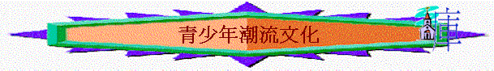

GAME:分成2組 (or多組)
在有限時間中，將任何有關青少年文化的事情寫在白紙中，看那一組寫得最多．．．
講解:
一．現今定義
文化(culture)
What has been termed the classic definition of culture was provided by the 19th-century English anthropologist Edward Burnett Tylor in the first paragraph of his Primitive Culture (1871):
Culture . . . is that complex whole which includes knowledge, belief, art, morals, law, custom, and any other capabilities and habits acquired by man as a member of society.
Kroeber and Clyde Kluckhohn
The existence of behavioral traditions--that is, patterns of behaviour transmitted by social rather than by biologic hereditary means--has definitely been established for nonhuman animals.
次文化(subculture)
is ideas,art and way of life of a group of people within a society who have different ideas,art,etc from the rest of that society----Collons Cobuild Dictionary
潮流(fashion)
is activity, attitude, way of behaving, etc that is popular with a lot of people at a particular time----Collons Cobuild Dictionary
二.聖經字眼
--「風俗」「惡俗」「世俗」「世界」「世人」 (沒有潮流,次文化等字)
「我在你們面前所逐出的國民，你們不可隨從他們的風俗；因為他們行了這一切的事，所以我
厭惡他們。」利20:23
「你們從前住的埃及地，那裡人的行為，你們不可效法，我要領你們到的迦南地，那裡人的行
為也不可效法，也不可照他們的惡俗行。」利18:3
「在神我們的父面前，那清潔沒有玷污的虔誠，就是看顧在患難中的孤兒寡婦，並且保守自己
不沾染世俗。」雅1:27
「你們若屬世界，世界必愛屬自己的；只因你們不屬世界，乃是我從世界中揀選了你們，所以
世界就恨你們。」約15:19
三.從聖經的時代看文化、潮流
1.舊約的潮流
a.創世記時代—高舉人本的文化(英雄主義)
「古實的兒子是西巴、哈腓拉、撒弗他、拉瑪、撒弗提迦。拉瑪的兒子是示 巴、底但。古實又生寧錄，他為世上英雄之首。他在耶和華面前是個英勇的獵戶，所以俗語說：「像寧錄在耶和華面前是個英勇的獵戶。」」創10:7-9
「那時，天下人的口音、言語都是一樣。他們往東邊遷移的時候，在示拿地遇見一片平原，就住在那裡。他們彼此商量說：「來吧！我們要做磚，把磚燒透了。」他們就拿磚當石頭，又拿石漆當灰泥。他們說：「來吧！我們要建造一座城和一座塔，塔頂通天，為要傳揚我們的名，免得我們分散在全地上。」耶和華降臨，要看看世人所建造的城和塔。耶和華說：「看哪，他們成為一樣的人民，都是一樣的言語，如今既做起這事來，以後他們所要做的事就沒有不成就的了。」」創11:1-6
--通俗、共通,一致抬舉人的文化
b.以色列人時代—效法外邦的文化(崇洋主義)
i.以律例為基礎的文化
ii.效法外邦風俗的文化
「他們又懼怕耶和華，又事奉自己的神，從何邦遷移，就隨何邦的風俗。」王下17:33
(1)立王—神容許但不代表神最喜悅
「以色列的長老都聚集，來到拉瑪見撒母耳，對他說：「你年紀老邁了，你兒子不行
你的道。現在求你為我們立一個王治理我們，像列國一樣。」」撒上8:4-5
「耶和華對撒母耳說：「百姓向你說的一切話，你只管依從；因為他們不是厭棄你，
乃是厭棄我，不要我作他們的王。自從我領他們出埃及到如今，他們常常離棄我，
事奉別神。現在他們向你所行的，是照他們素來所行的。故此你要依從他們的話，
只是當警戒他們，告訴他們將來那王怎樣管轄他們。」」撒上8:7-9
(2)建邱壇
「你們要將所趕出的國民事奉神的各地方，無論是在高山，在小山，在各青翠樹下，
都毀壞了；也要拆毀他們的祭壇，打碎他們的柱像，用火焚燒他們的木偶，砍下他
們雕刻的神像，並將其名從那地方除滅。你們不可照他們那樣事奉耶和華你們的神。
但耶和華你們的神從你們各支派中選擇何處為立他名的居所，你們就當往那裡去求
問。」申12:2-5
「我們今日在這裡所行的是各人行自己眼中看為正的事，你們將來不可這樣行；因為
你們還沒有到耶和華你神所賜你的安息地，所給你的產業。」申12:8-9
「你們不可照他們那樣事奉耶和華你們的神。」申12:4
「所羅門王上基遍去獻祭；因為在那裡有極大（或作：出名）的邱壇，他在那壇上獻一千犧牲作燔祭。」王上3:4
「亞哈斯王上大馬色去迎接亞述王提革拉毗列色，在大馬色看見一座壇，就照壇的規模樣式作法畫了圖樣，送到祭司烏利亞那裡。祭司烏利亞照著亞哈斯王從大馬色送來的圖樣，在亞哈斯王沒有從大馬色回來之先，建築一座壇。」王下16:10-11
「又將耶和華面前的銅壇從耶和華殿和新壇的中間搬到新壇的北邊。亞哈斯王吩咐祭司烏利亞說：「早晨的燔祭、晚上的素祭，王的燔祭、素祭，國內眾民的燔祭、素祭、奠祭都要燒在大壇上。燔祭牲和平安祭牲的血也要灑在這壇上，只是銅壇我要用以求問耶和華。」王下16:14-15
「約坦行耶和華眼中看為正的事，效法他父親烏西雅一切所行的；只是邱壇還沒有廢去，百姓仍在那裡獻祭燒香。約坦建立耶和華殿的上門。」王下15:34-35
～似乎是一件中性的事情,最初神容許的,但終不廢去,卻成為以色列網羅
(3)立偶像
「這是因以色列人得罪那領他們出埃及地、脫離埃及王法老手的耶和華他們的神，去敬畏別神，隨從耶和華在他們面前所趕出外邦人的風俗和以色列諸王所立的條規。以色列人暗中行不正的事，違背耶和華他們的神，在他們所有的城邑，從瞭望樓直到堅固城，建築邱壇；在各高岡上、各青翠樹下立柱像和木偶；」王下17:7-10
「你們不是驅逐耶和華的祭司亞倫的後裔和利未人嗎？不是照著外邦人的惡俗為自己立祭司嗎？無論何人牽一隻公牛犢、七隻公綿羊將自己分別出來，就可作虛無之神
的祭司。」代下13:9
～明明是神所憎惡,仍去行
(4)行惡行
「你們從前住的埃及地，那裡人的行為，你們不可效法，我要領你們到的迦南地，那裡人的行為也不可效法，也不可照他們的惡俗行。」利18:3
「你們都不可露骨肉之親的下體，親近他們。我是耶和華。不可露你母親的下體，羞辱了你父親。他是你的母親，不可露他的下體。不可露你繼母的下體；這本是你父親的下體。」利18:6-8
「在你中間有露繼母下體羞辱父親的，有玷辱月經不潔淨之婦人的。這人與鄰舍的妻行可憎的事；那人貪淫玷污兒婦；還有玷辱同父之姊妹的。」結22:10-11
2.新約的潮流
a.猶太人—死守規條的文化(律法主義)
「你們聽見有吩咐古人的話，說：『不可殺人』；又說：『凡殺人的難免受審判。』只是我告訴你們：凡（有古卷在凡字下加：無緣無故地）向弟兄動怒的，難免受審判；凡罵弟兄是拉加的，難免公會的審斷；凡罵弟兄是魔利的，難免地獄的火。」太5:21-22
「你們聽見有話說：『不可姦淫。』只是我告訴你們，凡看見婦女就動淫念的，這人心裡已經與他犯姦淫了。」太5:27-28
「你們聽見有話說：『以眼還眼，以牙還牙。』只是我告訴你們，不要與惡人作對。有人打你的右臉，連左臉也轉過來由他打。」太5:38-39
「但從前你們不認識神的時候，是給那些本來不是神的作奴僕；現在你們既然認識神，更可說是被神所認識的，怎麼還要歸回那懦弱無用的小學，情願再給他作奴僕呢？你們謹守日子、月分、節期、年分。我為你們害怕、惟恐我在你們身上是枉費了工夫。」加4:8-11
b.外邦人—多元思想的文化(理性主義)
～受希臘文化影響
「雅典人和住在那裡的客人都不顧別的事，只將新聞說說聽聽。」徒17:21
「有人偏離這些，反去講虛浮的話，想要作教法師，卻不明白自己所講說的所論定的。」提前1:6-7「提摩太啊，你要保守所託付你的，躲避世俗的虛談和那敵真道、似是而非的學問。已經有人自稱有這學問，就偏離了真道。」提前6:20-21
3.末世的潮流(放縱主義)
a.宴樂度日
「挪亞的日子怎樣，人子降臨也要怎樣。當洪水以前的日子，人照常吃喝嫁娶，直到挪亞進方舟的那日。」太24:37-38
「你該知道，末世必有危險的日子來到。因為那時人要專顧自己、貪愛錢財、自誇、狂傲、謗讟、違背父母、忘恩負義、心不聖潔、無親情、不解怨、好說讒言、不能自約、性情兇暴、不愛良善、賣主賣友、任意妄為、自高自大、愛宴樂、不愛神，有敬虔的外貌，卻背了敬虔的實意；這等人你要躲開。」提後3:1-5
b.自我自私
「只因不法的事增多，許多人的愛心才漸漸冷淡了。」太24:12
c.道德瓦解
「不法的事增多」「違背父母」「忘恩負義」「賣主賣友」
d.放縱情慾
「這些人是私下議論，常發怨言的，隨從自己的情慾而行，口中說誇大的話，為得便宜諂媚人。」猶16
「他們曾對你們說過，末世必有好譏誚的人隨從自己不敬虔的私慾而行。」猶18
e.虛言惡語
四.從聖經的真理看潮流文化
1.文化的中性(或正面)
～耶穌在世,也入鄉隨俗,赴婚宴,過節期,守禮儀
～在世也有很多美、善地方值得效法
「弟兄們，我還有未盡的話：凡是真實的、可敬的、公義的、清潔的、可愛的、有美名的，若有什麼德行，若有什麼稱讚，這些事你們都要思念。」腓4:8
「不要以惡報惡；眾人以為美的事要留心去做。」羅12:17
2.潮流的危機
a.撒但的工具
「你們死在過犯罪惡之中，他叫你們活過來。那時，你們在其中行事為人，隨從今世的風俗，順服空中掌權者的首領，就是現今在悖逆之子心中運行的邪靈。我們從前也都在他們中間，放縱肉體的私慾，隨著肉體和心中所喜好的去行，本為可怒之子，和別人一樣。」 弗2:1-3
～人受潮流風俗,挾制,敗脫不了,但甘心跟隨
b.放縱的途徑
c.愛神的失去
「凡遵守主道的，愛神的心在他裡面實在是完全的。從此我們知道我們是在主裡面。」約壹2:15
「因為底馬貪愛現今的世界，就離棄我往帖撒羅尼迦去了，革勒士往加拉太去，提多往撻馬太去，」提後4:10
d.不虔的地步
「但要遠避世俗的虛談，因為這等人必進到更不敬虔的地步。」提後2:16
e.敗壞的終結
「所以，你們要守我所吩咐的，免得你們隨從那些可憎的惡俗，就是在你們以先的人所常行的，以致玷污了自己。我是耶和華你們的神。」利8:30
3.「跟風」的原因
a.不滿足(撒上8:4-5)
b.受挾制(申2:1-3)
c.順肉體(弗2:3)
d.更安舒
「你們若屬世界，世界必愛屬自己的；只因你們不屬世界，乃是我從世界中揀選了你們，所以世界就恨你們。」約15:19
4.對信徒的提醒
「不要效法這個世界，只要心意更新而變化，叫你們察驗何為神的善良、純全、可喜悅的旨意。」羅12:
a.不效法
b.常更新
c.要察驗
d.要分別
「你們和不信的原不相配，不要同負一軛。義和不義有什麼相交呢？光明和黑暗有什
麼相通呢？基督和彼列（彼列就是撒但的別名）有什麼相和呢？信主的和不信主的
有什麼相干呢？神的殿和偶像有什麼相同呢？因為我們是永生神的殿，就如神曾說：
我要在他們中間居住，在他們中間來往；我要作他們的神；他們要作我的子民。又
說：你們務要從他們中間出來，與他們分別；不要沾不潔淨的物，我就收納你們。」
林後6:14-17
e.不沾染
「在神我們的父面前，那清潔沒有玷污的虔誠，就是看顧在患難中的孤兒寡婦，並且
保守自己不沾染世俗。」雅1:27
5.對教導者的提醒
a.對自己
i.要棄絕
「只是要棄絕那世俗的言語和老婦荒渺的話，在敬虔上操練自己。」提前4:7
「提摩太啊，你要保守所託付你的，躲避世俗的虛談和那敵真道、似是而非的學問。」提前6:20
ii.要追求
「但你這屬神的人要逃避這些事，追求公義、敬虔、信心、愛心、忍耐、溫柔。」
提前6:11
b.對羊群
i.要提醒
「你若將這些事提醒弟兄們，便是基督耶穌的好執事，在真道的話語和你向來所服
從的善道上得了教育。」提前4:6
「又勸少年人要謹守。你自己凡事要顯出善行的榜樣，在教訓上要正直、端莊。」
多2:6-7
ii.作榜樣
「不可叫人小看你年輕，總要在言語、行為、愛心、信心、清潔上，都作信徒的榜
樣。」提前4:12
6.正面的運用
a.效法美善
b.引起話題
～耶穌、保羅時常用當地的文化俗語,引起話題,表明真理
c.溶入群體
～保羅在甚麼人中間就作甚麼人
～但保羅也為羊群謹守
探討問題:
1.有什麼潮流在現今青少年肢體中?
2.在牧養群體中,有否一些潮流文化(在肢體間)您是不能接受?
3.在觀察、參予一些少年團契聚會中,有否一些方式,您覺得太〝in〞
4.有哪些文化,您以前會拒絕,但現在您已可以接受呢?
您對潮流文化接納情度的底線又在那裏呢?
5.您會如何平衡〝太古板〞與〝in〞呢?
6.在您接觸的青少年肢體中,有否發現他們在潮流中出現危機?試分享
7.有沒有一些週會,您發現負責人能適當運用潮流而帶入真理? 形式、內容是怎樣?試分享